Asleep at the Virtual Wheel
The Increasing Inaccessibility of Virtual Reality Applications
Project Overview
Review to provide a clearer state-of-the-art and historical understanding of how accessibility features are implemented within 330 VR applications.
- Presented at ACM Conference on Human Factors in Computing Systems (CHI '25) (opens in a new tab)
- Open-access full paper (PDF (opens in a new tab)) in CHI '25 Proceedings (opens in a new tab) (139 H5-index (1st ranked HCI publication on Google Scholar (opens in a new tab)); Core A* (opens in a new tab))
- Co-author (opens in a new tab) at The Third Workshop on Building an Inclusive and Accessible Metaverse for All (opens in a new tab) at CHI '25
- South-West UK Pre-CHI presenter (opens in a new tab)
- ACM Europe Summer School on Accessible and Inclusive Technologies: student volunteer (opens in a new tab) & poster presentation (opens in a new tab)
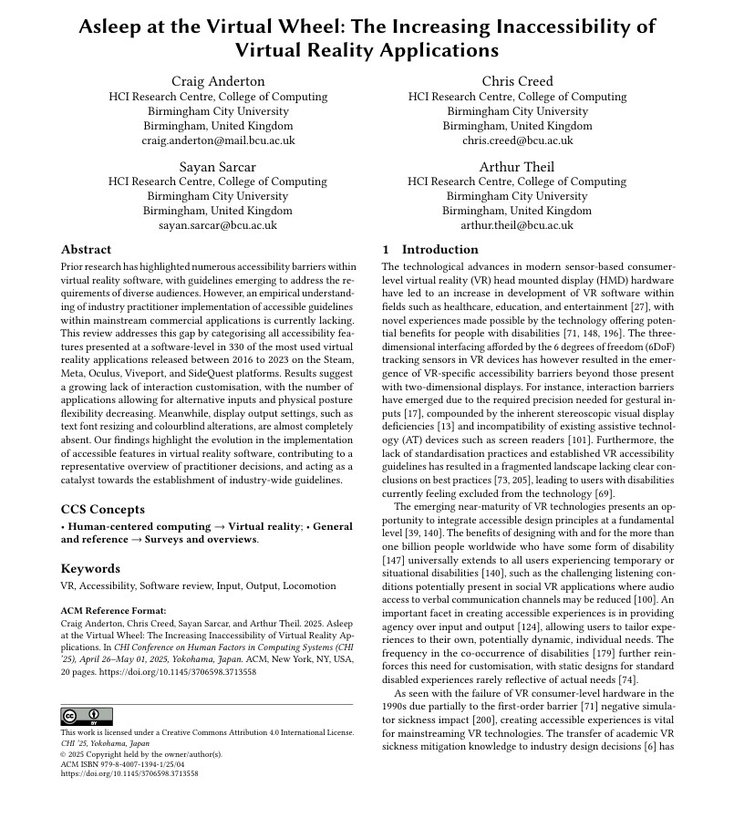
Problem Definition
VR technology is inherently ableist, with a lack of guidelines for designing experiences leading to limited developer awareness of best practices and a feeling of exclusion from people with disabilities. Due to a gap in literature exploring how accessibility options are presented in commercial applications, the current state of accessibility is hard to determine.
The following two key research questions were explored:
- Which accessibility features and software-level customisation options are available to tailor required interactions, physical positioning, locomotion, user interface (UI) elements, and outputs to individual needs?
- How has the accessibility of mainstream VR applications evolved since 2016?
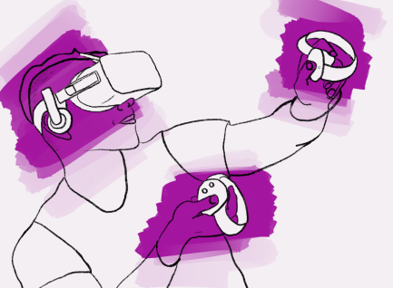
The motivation for the review included:
- Continued academic engagement - understanding of decisions and acting as a reinforcement of the call to action in the creation of inclusive VR software
- Existing lack of guideline knowledge amongst practitioners
- Accessibility research focus mostly on sickness; less on non-visual feedback, leading to feeling of exclusion for users with sensory impairments
- Exploring the underexplored general VR accessibility field
Methodology
Data were collected from 330 applications released on all major VR application storefronts from 2016 to 2023, categorising accessibility features and options to tailor the experience available in each application.
A systematic software review process was followed, with inclusion criteria based upon commercial application usage metrics in order to identify the applications that are most likely to be experienced by users, in turn providing a representative overview of mainstream VR practices.
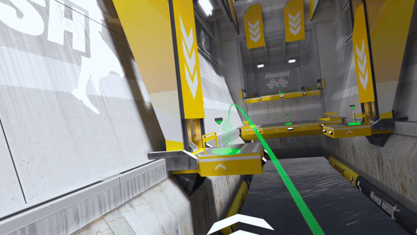
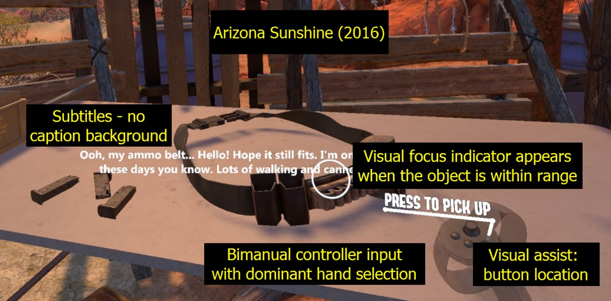
Results
Our findings highlight a number of areas where practitioners have not widely implemented options to tailor application experiences, including little support for alternative adaptable hardware inputs, minimal text size adjustment options, and an almost complete lack of colourblind settings. Additionally, temporal trends unexpectedly emphasise how a number of essential accessibility features are becoming less prominently supported at a software-level, with these trends suggesting that further establishment of best practice guidelines and more stringent enforcement of accessibility recommendations by VR application platforms may be required to reverse the general growing inaccessibility of mainstream VR software.
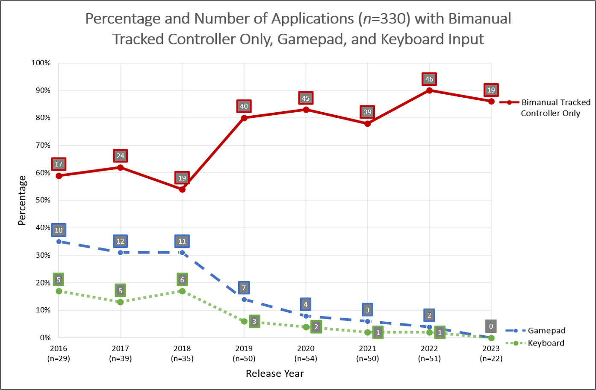
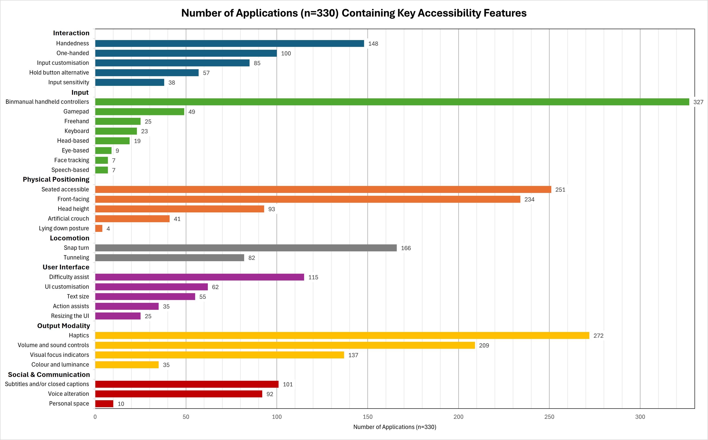
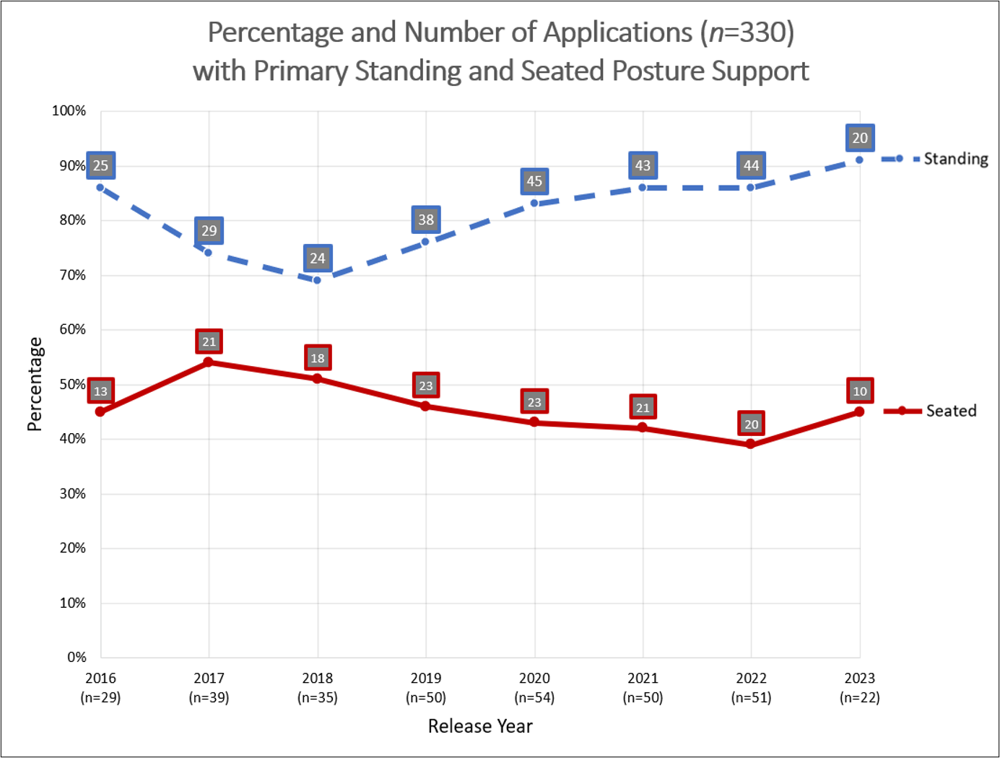
Physical positioning flexibility is also decreasing, with primary seated posture progressively less offered. In addition to the reduction in input options, UI and output modality results indicate that users are largely unable to tailor the visual or audio experience to their own preferences or needs, with text size adjustment rarely included beyond depth-based control, display brightness settings contained in only 12 of the 330 applications, and dedicated colourblind control provided in just three applications. Potentially accessible haptic feedback, in particular for providing touch based information about the environment during locomotion, is also rarely included.
Interaction
Interaction findings include just under half of the applications allowing for dominant hand selection, whilst more fine-grained alterations over interactions, such as input key customisation with key binding alterations and adjustments to input sensitivity, with for example smoothing of aiming inputs, is generally less supported.
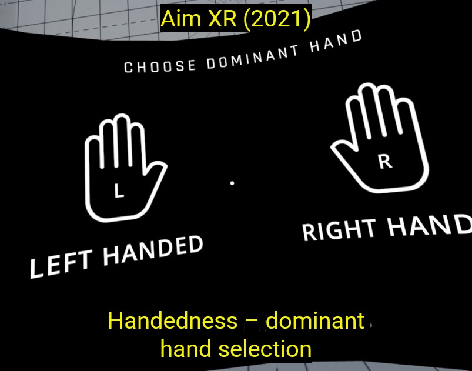
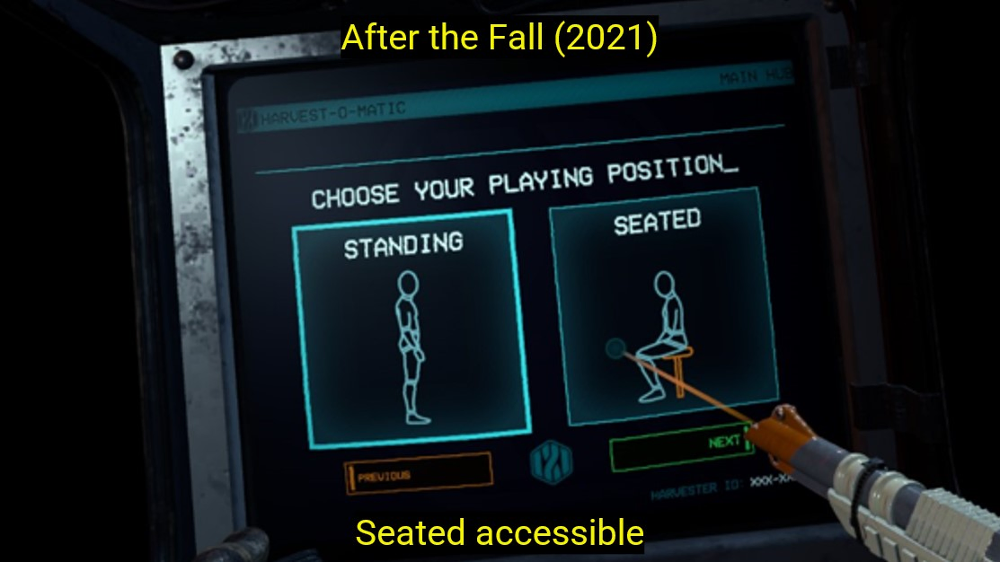
Physical Positioning
Although trends suggest primary seated posture is generally becoming less supported, seated access is generally well supported overall in 251 titles, with many applications either adapting to seated postures or providing options to choose between standing and seated access. Software-level lying down posture support however is available in just 4 titles, supporting the belief of bed-bound users that their access needs are not considered.
User Interface
Users are given little control over resizing of text or UI elements, with more detailed analysis revealing that depth-fixed size adjustments in particular are very rare.
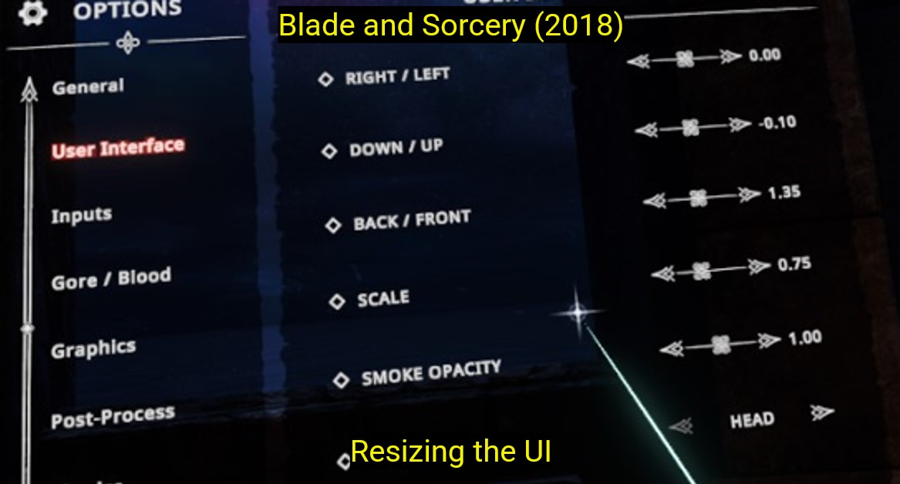
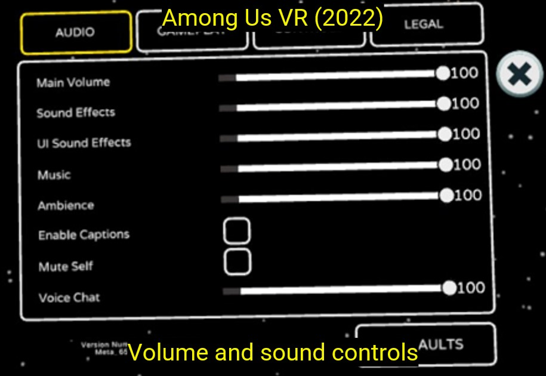
Output Modality
Haptic feedback is found in a large number of titles, although further analysis reveals that haptics associated with locomotion may be underexplored in comparison to interactions, whilst volume and sound controls are also well supported in over 200 titles. Adjustments to colour and brightness however are very rare, vital considerations for users who are colourblind or have low vision for example.
Social & Communication
Subtitles and closed captions are included in 101 titles, whilst only 10 applications containing control over personal space, such as allowing for boundary bubbles, highlights how potential shared virtual environment harassment concerns are often not considered. Meanwhile, no title contains full signing support.
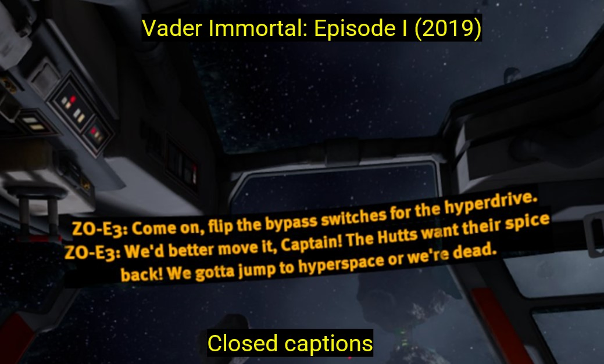
Conclusion
- Numerous failures to accommodate the needs of users with disabilities across all categories
- XR guidelines and platform-specific recommendations appear largely unsupported in mainstream titles
- Worrying accessibility trends, particularly in terms of interaction and physical positioning flexibility
CHI '25 video presentation
Key Takeaways
Practitioners
- Prioritise Inclusive Input Support
- Enhance Physical Positioning Flexibility
- Provide UI and Output Customisation Options
- Support Communication Needs
- Adhere to Accessibility Guidelines
Researchers
- Explore Alternative Inputs and Assistive Technologies
- Investigate the Impact of Limited Output Customisation
- Assess Accessibility Trends
- Focus on Locomotion From Diverse Perspectives
- Evaluate the Role of Guidelines
Collaboration
- Joint Research Projects
- Resource Sharing
- Further Establish Workshops and Working Groups
- Promote Accessibility Education
Future Directions
- Accessibility audits - effectiveness of implementations
- Engaging a wide range of users with disabilities in analyses
- Additional categorisation influenced by emerging VR guidelines
- Research required in multi-modal and customisable inputs, spatial UI elements, and alternative output modalities
.webp)
Reflections
The representative overview of industry practices for the first time highlights the continuing, and often concerning, evolution of mainstream VR software-level accessibility. Results showing a reduction in the offering of a number of accessible features highlights the urgency needed in a renewed focus on addressing the accessibility of mainstream VR.
We hope that sharing this data acts as a catalyst towards the further establishment of industry-wide VR accessibility guidelines, in turn leading to the creation of inclusive VR experiences for all audiences.
Together with the locomotion analysis, this was my first study during my PhD, laying the groundwork for future research both for my PhD & for the wider HCI research community.
This review lays the foundation for the rest of my PhD, building my skills at identifying and investigating research gaps, and hopefully will prove useful for both researchers looking to understand the state of accessibility in VR, teachers introducing the topic of accessibility in VR to students, and users who want more information about the accessibility levels of a specific VR application prior to purchase.
Overwhelmingly positive scores and comments from CHI '25 reviewers, followed by acceptance to present our results at the conference in Japan, have really boosted my confidence in ch and showcase my ability to contribute at the highest level.
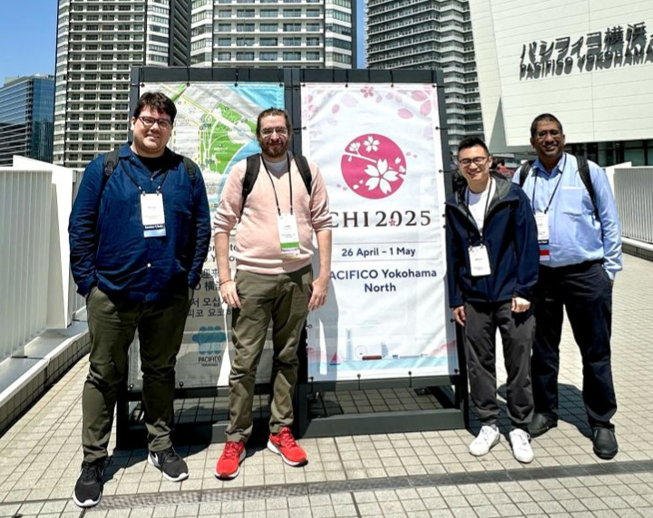
Thank you for reading about my review!
Feel free to contact me for any further questions!